5 Pruebas de hipótesis
Las primeras técnicas que veremos intentan contestar la siguiente pregunta:
- Si observamos cierto patrón en los datos, ¿cómo podemos cuantificar la evidencia de que es un patrón notable y no sólo debido a fluctuaciones en los datos particulares que tenemos? ¿Cómo sabemos que no estamos sobreinterpretando esas fluctuaciones?
Por ejemplo:
- Parte de una población recibe un tratamiento para, y otra parte no.
- Personas distintas reaccionan de manera distinta, por lo tanto observamos fluctuaciones en las respuestas.
- ¿Las fluctuaciones que observamos en los tratados son consistentes con que el tratamiento les ayuda en algo?
O también:
- Un sistema tiene cierto comportamiento “usual” para el cual tenemos datos históricos. El sistema presenta fluctuaciones en el tiempo.
- Observamos la última salida de nuestro sistema. Naturalmente, tiene fluctuaciones. ¿Esas fluctuaciones son consistentes con la operación usual del sistema? ¿Existe evidencia para pensar que algo en el sistema cambió?
Comparación con poblaciones de referencia
En las prueba de hipótesis, tratamos de construir distribuciones de referencia para comparar resultados que obtengamos con un “estándar” de variación, y juzgar si nuestros resultados son consistentes con la referencia o no (Box et al. (1978)).
En algunos casos, ese estándar de variación puede construirse con datos históricos.
Ejemplo
Supongamos que estamos considerando cambios rápidos en una serie de tiempo de alta frecuencia. Hemos observado la serie en su estado “normal” durante un tiempo considerable, y cuando observamos nuevos datos quisiéramos juzgar si hay indicaciones o evidencia en contra de que el sistema sigue funcionando de manera similar.
Digamos que monitoreamos ventanas de tiempo de tamaño 20 y necesitamos tomar una decisión. Abajo mostramos cinco ejemplos donde el sistema opera normalmente, que muestra la variabilidad en el tiempo en ventanas cortas del sistema.
Ahora suponemos que obtenemos una nueva ventana de datos. ¿Hay evidencia en contra de que el sistema sigue funcionando de manera similar?
Nuestra primera inclinación debe ser comparar: en este caso, compararamos ventanas históricas con nuestra nueva serie:
# usamos datos simulados para este ejemplo
set.seed(8812)
historicos <- simular_serie(5000)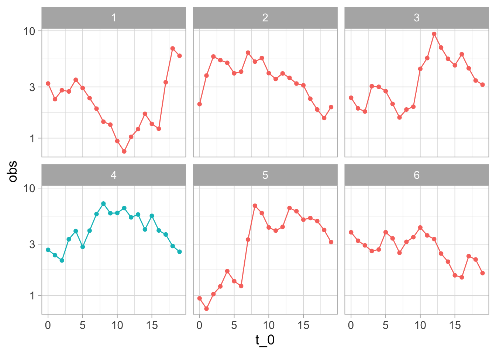
¿Vemos algo diferente en los datos nuevos (el panel de color diferente)?
Indendientemente de la respuesta, vemos que hacer este análisis de manera tan simple no es siempre útil: seguramente podemos encontrar maneras en que la nueva muestra (4) es diferente a muestras históricas. Por ejemplo, ninguna de muestras tiene un “forma de montaña” tan clara.
Nos preguntamos si no estamos sobreinterpretando variaciones que son parte normal del proceso.
Podemos hacer un mejor análisis si extraemos varias muestras del comportamiento usual del sistema, graficamos junto a la nueva muestra, y revolvemos las gráficas para que no sepamos cuál es cuál. Entonces la pregunta es:
- ¿Podemos detectar donde están los datos nuevos?
Esta se llama una prueba de lineup, o una prueba de ronda de sospechosos (Hadley Wickham et al. (2010)). En la siguiente gráfica, en uno de los páneles están los datos recientemente observados. ¿Hay algo en los datos que distinga al patrón nuevo?
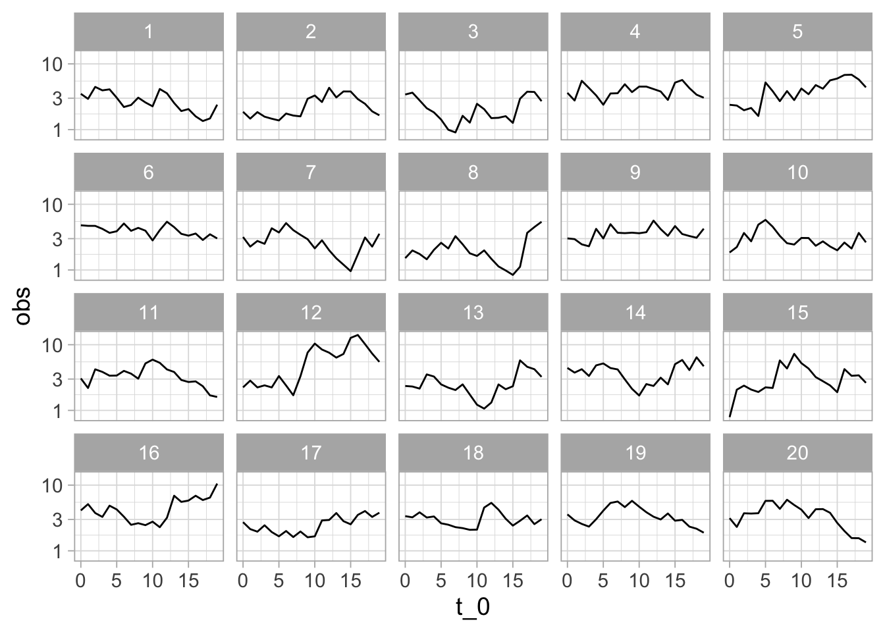
Ejercicio: ¿cuáles son los datos nuevos (solo hay un panel con los nuevos datos)? ¿Qué implica que la gráfica que escogamos como “más diferente” no sean los datos nuevos? ¿Qué implica que le “atinemos” a la gráfica de los datos nuevos?
Ahora observamos al sistema en otro momento y repetimos la comparación. En el siguiente caso obtenemos:
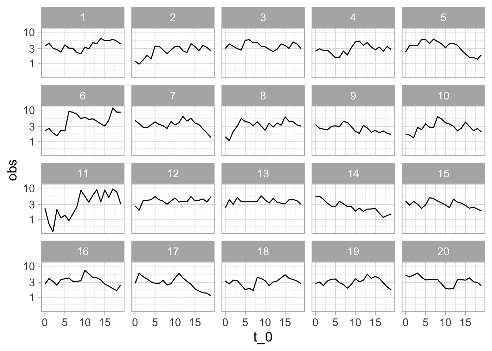
Aunque es imposible estar seguros de que ha ocurrido un cambio, la diferencia de una de las series es muy considerable. Si identificamos los datos correctos, la probabilidad de que hayamos señalado la nueva serie “sobreinterpretando” fluctuaciones en un proceso que sigue comportándose normalente es 0.05 - relativamente baja. Detectar los datos diferentes es evidencia en contra de que el sistema sigue funcionando de la misma manera que antes.
Llamamos hipótesis nula a la hipótesis de que los nuevos datos son producidos bajo las mismas condiciones que los datos de control o de referencia.
Si no escogemos la gráfica de los nuevos datos, nuestra conclusión es que la prueba no aporta evidencia en contra de la hipótesis nula.
Si escogemos la gráfica correcta, nuestra conclusión es que la prueba aporta evidencia en contra de la hipótesis nula.
¿Qué tan fuerte es la evidencia, en caso de que descubrimos los datos no nulos?
Cuando el número de paneles es más grande y detectamos los datos, la evidencia es más alta en contra de la nula. Decimos que el nivel de significancia de la prueba es la probabilidad de seleccionar a los datos correctos cuando la hipótesis nula es cierta (el sistema no ha cambiado).
Adicionalmente, si acertamos, y la diferencia es más notoria y fue muy fácil detectar la gráfica diferente (pues sus diferencias son más extremas), esto también sugiere más evidencia en contra de la hipótesis nula (valor p).
En el caso de 20 paneles, la significancia es de 1/20 = 0.05. Cuando detectamos los datos nuevos, niveles de significancia más bajos implican más evidencia en contra de la nula.
Esta prueba rara vez (o nunca) nos da seguridad completa acerca de ninguna conclusión, aún cuando hiciéramos muchos páneles.
5.1 Cuantificando la distribución de referencia
En el ejemplo anterior estamos intentando dectectar cualquier desviación del comportamiento normal del sistema de una manera rigurosa. Podemos hacerlo más cuantitativo creando estadísticas resumen de las series. Por ejemplo, podríamos utilizar la variabilidad que tienen las series alrededor de su nivel general.
sd_simple <- function(x){
# suavizamiento exponencial
mod <- HoltWinters(x, beta=FALSE, gamma=FALSE)
suavizamiento <- fitted(mod)[,1] |> as.numeric()
sd(x[-1] - suavizamiento)
}
referencia_tbl <- muestrear_ventanas(historicos, n_ventana = 1500) |>
pluck("lineup") |>
group_by(rep) |>
summarise(est_prueba = sd_simple(obs))
referencia_tbl |> head()# A tibble: 6 × 2
rep est_prueba
<int> <dbl>
1 1 0.820
2 2 1.23
3 3 0.921
4 4 1.21
5 5 0.909
6 6 1.16 ggplot(referencia_tbl, aes(x = est_prueba)) +
geom_histogram() +
geom_vline(xintercept = sd_simple(observados$obs), colour = "red") +
annotate("text", x = 2.5, y = 30,
label = "diferencia observada", colour = "red", angle = 90)`stat_bin()` using `bins = 30`. Pick better value with `binwidth`.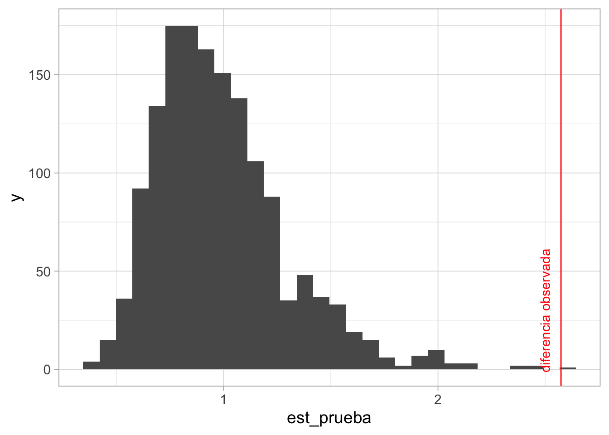
Y confirmamos que en efecto el valor observado (línea roja) es uno muy extremo, y poco consistente con el comportamiento usual del sistema.
El valor p (de una cola) Se define como la probabilidad de observar este resultado, o uno más grande, suponiendo que el sistema está funcionando usualmente, y en este caso lo calculamos como:
diferencia_obs <- sd_simple(observados$obs)
referencia_2 <- bind_rows(referencia_tbl,
tibble(rep = 0, est_prueba = diferencia_obs))
referencia_2 |>
mutate(mayor_obs = est_prueba > diferencia_obs) |>
summarise(valor_p = mean(mayor_obs)) |>
kable() |> kable_paper(full_width = FALSE)| valor_p |
|---|
| 0.0006662 |
Que cuantifica que es muy poco probable observar el sistema en el estado actual si fuera cierto que no ha sufrido cambios.
Una estadística de prueba es un resumen de datos, a partir del cual construimos una distribución de referencia. Distintas estadísticas miden distintos aspectos de las diferencias que puede haber entre los datos de prueba y los de referencia.
Comparando distribuciones
Ahora intentamos un ejemplo más típico.
Supongamos tenemos varias observaciones de tres poblaciones a, b y c, donde cada grupo podría tener su proceso generador de datos particular.
Nuestra pregunta es: ¿los procesos generadores de datos de estos tres grupos son iguales o hay evidencia de que son diferentes? Quizá la pregunta detrás de esta comparación es: el grupo de capturistas b recibió un entrenamiento especial. ¿Tienen menos errores de captura? La medición que comparamos es la proporción de datos erróneos que capturan en una tarea dada.
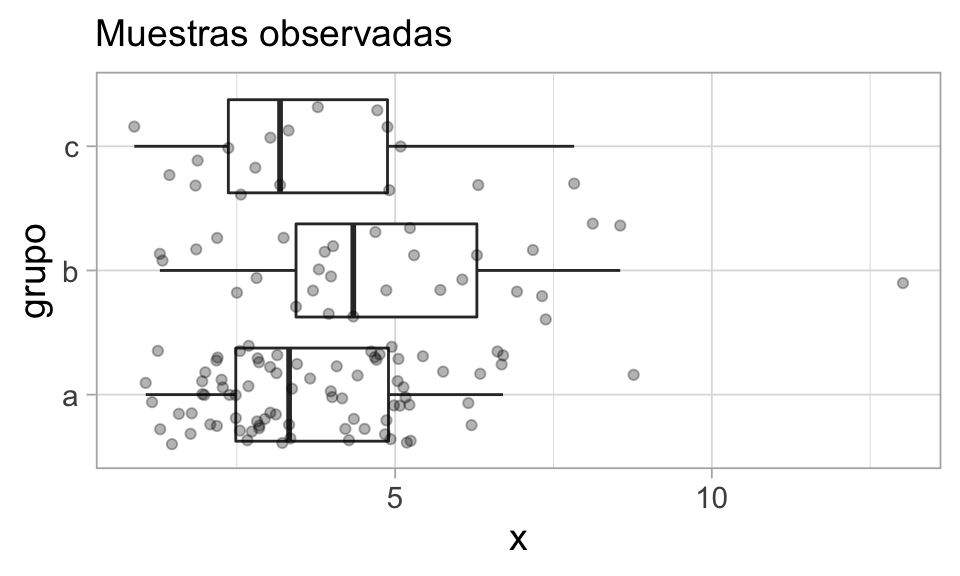
En la muestra observamos diferencias entre los grupos. Pero notamos adicionalmente que hay mucha variación dentro de cada grupo. Nos podríamos preguntar entonces si las diferencias que observamos se deben variación muestral, y no necesariamente a que los procesos generadores de datos de cada muestra son diferentes.
Podemos construir ahora una hipótesis nula, que establece que las observaciones provienen de una población similar:
- Los procesos generadores de (a, b, c) son prácticamente indistiguibles. En este caso, la variación que observamos se debería a que tenemos información incompleta acerca de esas poblaciones.
Como en el ejemplo anterior necesitamos construir o obtener una distribución de referencia para comparar qué tan extremos o diferentes son los datos que observamos. Esa distribución de referencia debería estar basada en el supuesto de que los grupos producen datos de distribuciones similares. En este caso, no tenemos datos de referencia históricos para comparar los grupos.
Permutaciones y el lineup
Para abordar este problema podemos pensar en usar permutaciones de los grupos de la siguiente forma (Box et al. (1978), Hesterberg (2015)):
- Si los grupos producen datos bajo procesos idénticos, entonces los grupos a, b, c solo son etiquetas que no contienen información.
- Podríamos permutar al azar las etiquetas y observar nuevamente la gráfica de caja y brazos por grupos.
- Si la hipótesis nula es cierta (procesos generadores idénticos), esta es una muestra tan verosímil como la que obtuvimos.
- Así que podemos construir datos de referencia permutando las etiquetas de los grupos al azar, y observando la variación que ocurre.
- Si la hipótesis nula es cercana a ser cierta, no deberíamos de poder distinguir fácilmente los datos observados de los producidos con las permutaciones al azar.
Vamos a intentar esto, por ejemplo usando una gráfica de cuantiles simplificada. Hacemos un lineup, o una rueda de sospechosos (usamos el paquete H. Wickham, Chowdhury, y Cook (2012), ver Hadley Wickham et al. (2010)), donde 19 de los acusados son generados mediante permutaciones al azar de la variable del grupo, y el culpable (los verdaderos datos) están en una posición escogida al azar. ¿Podemos identificar los datos verdaderos? Para evitar sesgarnos, también ocultamos la etiqueta verdadera
Usamos una gráfica que muestra los cuantiles 0.10, 0.50, 0.90:
set.seed(88)
reps <- lineup(null_permute("grupo"), muestra_tab, n = 20)decrypt("pPrt Zh4h Bk VyJB4Byk ub")reps_mezcla <- reps |> mutate(grupo_1 = factor(digest::digest2int(grupo) %% 177))
grafica_cuantiles(reps_mezcla, grupo_1, x) +
facet_wrap(~.sample, ncol = 5) + ylab("x") +
labs(caption = "Mediana y percentiles 10% y 90%")+ geom_point(aes(colour = grupo_1))`summarise()` has grouped output by 'grupo_1'. You can override using the
`.groups` argument.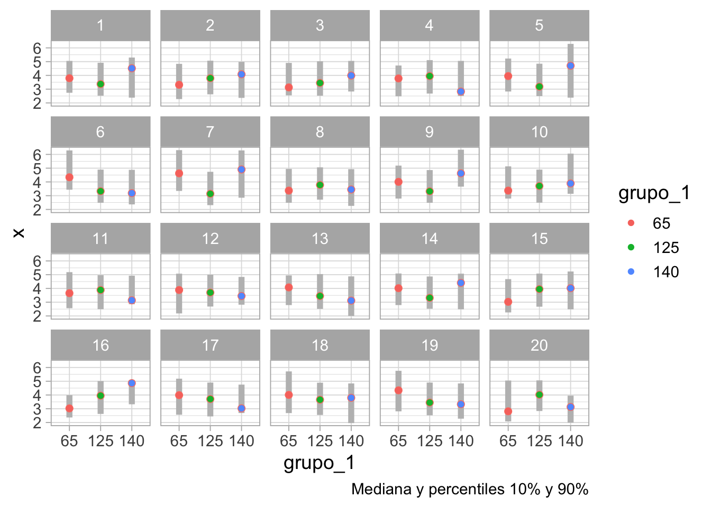
Y la pregunta que hacemos es podemos distinguir nuestra muestra entre todas las replicaciones producidas con permutaciones?
Ejercicio: ¿dónde están los datos observados? Según tu elección, ¿qué tan diferentes son los datos observados de los datos nulos?
En este ejemplo, es difícil indicar cuáles son los datos. Los grupos tienen distribuciones similares y es factible que las diferencias que observamos se deban a variación muestral.
Si la persona escoge los verdaderos datos, encontramos evidencia en contra de la hipótesis nula (los tres grupos son equivalentes). En algunos contextos, se dice que los datos son significativamente diferentes al nivel 0.05. Esto es evidencia en contra de que los datos se producen de manera homogénea, independientemente del grupo.
Si la persona escoge uno de los datos permutados, no encontramos evidencia en contra de que los tres grupos producen datos con distribuciones similares.
Comparaciones con lineup 2
Repetimos el ejemplo para otra muestra (en este ejemplo el proceso generador de datos es diferente para el grupo b):
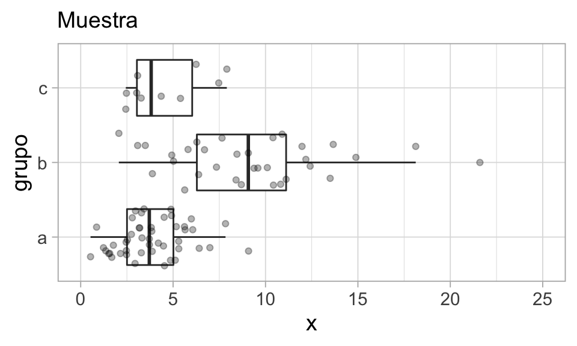
Hacemos primero la prueba del lineup:
set.seed(121)
reps <- lineup(null_permute("grupo"), muestra_tab, n = 20)decrypt("pPrt Zh4h Bk VyJB4Byk uG")grafica_cuantiles(reps |> mutate(grupo_escondido = factor(digest::digest2int(grupo) %% 177)),
grupo_escondido, x) + facet_wrap(~.sample) + ylab("x") +
coord_flip() + geom_point(aes(colour = grupo_escondido))`summarise()` has grouped output by 'grupo_escondido'. You can override using
the `.groups` argument.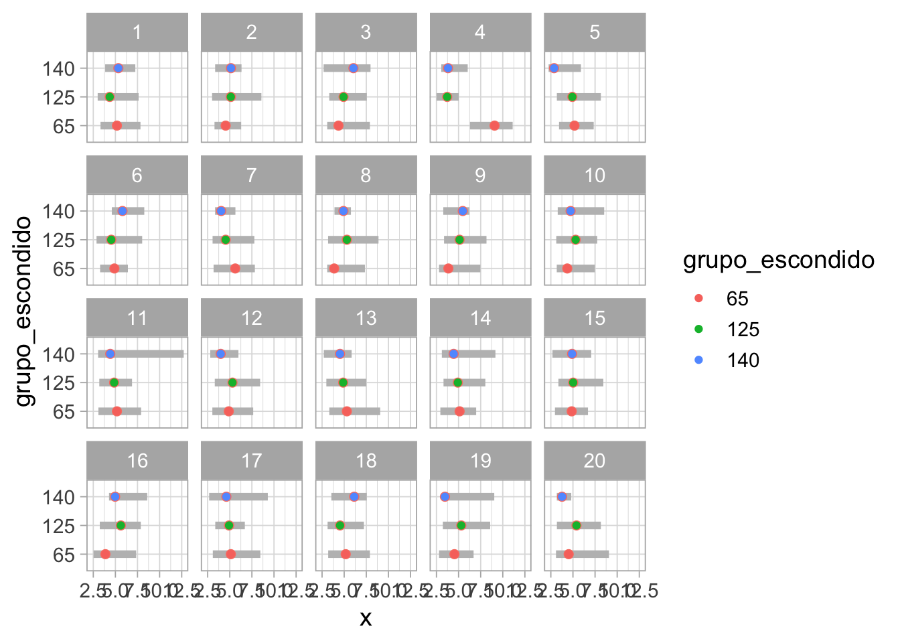
Podemos distinguir más o menos claramente que está localizada en valores más altos y tiene mayor dispersión. En este caso, como en general podemos identificar los datos, obtenemos evidencia en contra de que los tres grupos tienen distribuciones iguales.
5.2 Aleatorización e interpretación
En los ejemplos anteriores, nuestras conclusiones se refieren a los procesos generadores de los datos, y no necesariamente a una relación del grupo con la variable respuesta en la población.
Para entender esto, supongamos que a, b y c son distintos grupos de capturistas. Pero decidimos escoger en el grupo b sólo aquellos capturistas que no asistieron a los entrenamientos. Nuestra conclusión entonces es difícil de interpretar: no sabemos si la evidencia que encontramos de que en el grupo b comenten más errores se debe al hecho de pertenecer al grupo b o al hecho de que seleccionamos de una manera distinta a los capturistas del grupo b.
Hay dos maneras de establecer la relación del grupo con la respuesta según nuestras pruebas:
- Haciendo ciertos supuestos acerca de los procesos generadores de datos, con conocimiento de dominio.
- Controlar el proceso generador de datos, escogiendo las muestras de cada grupo de manera aleatoria.
Si consideramos que el proceso generador incluye el proceso de selección de las unidades, y la relación que existe entre pertenencia a un grupo y otra respuesta, cuando aleatorizamos la selección de la muestra nuestra hipótesis nula cambia:
- Sin aleatorización: los procesos generadores de los tres grupos son iguales: esto incluye el proceso de selección de las unidades y el “efecto” del grupo a,b,c sobre la respuesta.
- Con aleatorización: las distribuciones de la variable respuesta dentro de cada grupo son iguales.
Y la segunda hipótesis nula es que la que generalmente nos interesa probar
Cuando aleatorizamos la selección de la muestra, nuestras pruebas de hipótesis son inferencias a la población de la que se extrajo la muestra.
Prueba de permutaciones para proporciones
Veremos otro ejemplo donde podemos hacer más concreta la idea de distribución nula o de referencia usando pruebas de permutaciones. Supongamos que con nuestra muestra aleatoria de tomadores de té, queremos probar la siguiente hipótesis nula:
- Los tomadores de té en bolsas exclusivamente usan azúcar más a tasas simillares que los tomadores de té suelto (que pueden o no también tomar té en bolsita).
Los datos que obtuvimos en nuestra encuesta, en conteos, son:
te_azucar <- tea |> select(how, sugar) |>
mutate(how = ifelse(how == "tea bag", "bolsa_exclusivo", "suelto o bolsa"))
te_azucar |> group_by(how, sugar) |> tally() |>
spread(how, n) |>
kable() |> kable_paper(full_width = FALSE)| sugar | bolsa_exclusivo | suelto o bolsa |
|---|---|---|
| No.sugar | 81 | 74 |
| sugar | 89 | 56 |
Y en proporciones tenemos que:
| how | prop_azucar | n |
|---|---|---|
| bolsa_exclusivo | 0.52 | 170 |
| suelto o bolsa | 0.43 | 130 |
Pero distintas muestras podrían haber dado distintos resultados. Nos preguntamos que tan fuerte es la evidencia en contra de que en realidad los dos grupos de personas usan azúcar en proporciones similares, y la diferencia que vemos se puede atribuir a variación muestral.
En este ejemplo, podemos usar una estádistica de prueba numérica, por ejemplo, la diferencia entre las dos proporciones:
\[p_1 - p_2\].
(tomadores de en bolsa solamente vs. suelto y bolsa). El proceso sería entonces:
- La hipótesis nula es que los dos grupos tienen distribuciones iguales, que este caso quiere decir que en la población, tomadores de té solo en bolsa usan azúcar a las mismas tasas que tomadores de suelto o bolsas.
- Bajo nuestra hipótesis nula (proporciones iguales), producimos una cantidad grande (por ejemplo 10 mil o más) de muestras permutando las etiquetas de los grupos.
- Evaluamos nuestra estadística de prueba en cada una de las muestras permutadas.
- El conjunto de valores obtenidos nos da nuestra distribución de referencia (ya no estamos limitados a 20 replicaciones como en las pruebas gráficas).
- Y la pregunta clave es: ¿el valor de la estadística en nuestra muestra es extrema en comparación a la distribución de referencia?
# ESta función calcula la diferencia entre grupos de interés
calc_diferencia <- function(datos){
datos |>
mutate(usa_azucar = as.numeric(sugar == "sugar")) |>
group_by(how) |>
summarise(prop_azucar = mean(usa_azucar)) |>
spread(how, prop_azucar) |>
mutate(diferencia_prop = bolsa_exclusivo - `suelto o bolsa`) |> pull(diferencia_prop)
}
# esta función hace permutaciones y calcula la diferencia para cada una
permutaciones_est <- function(datos, variable, calc_diferencia, n = 1000){
# calcular estadística para cada grupo
permutar <- function(variable){
sample(variable, length(variable))
}
tbl_perms <- tibble(.sample = seq(1, n-1, 1)) |>
mutate(diferencia = map_dbl(.sample,
~ datos |> mutate({{variable}}:= permutar({{variable}})) |> calc_diferencia()))
bind_rows(tbl_perms, tibble(.sample = n, diferencia = calc_diferencia(datos)))
}La diferencia observada es:
dif_obs <- calc_diferencia(te_azucar)
dif_obs |> round(3)[1] 0.093Ahora construimos nuestra distribución nula o de referencia:
valores_ref <- permutaciones_est(te_azucar, how, calc_diferencia, n = 10000)Y graficamos nuestros resultados (con un histograma y una gráfica de cuantiles, por ejemplo). la estadística evaluada un cada una de nuestras muestras permutadas:
g_1 <- ggplot(valores_ref, aes(sample = diferencia)) + geom_qq(distribution = stats::qunif) +
xlab("f") + ylab("diferencia") + labs(subtitle = "Distribución nula o de referencia")
g_2 <- ggplot(valores_ref, aes(x = diferencia)) + geom_histogram(binwidth = 0.04) +
coord_flip() + xlab("") + labs(subtitle = " ")
gridExtra::grid.arrange(g_1, g_2, ncol = 2) 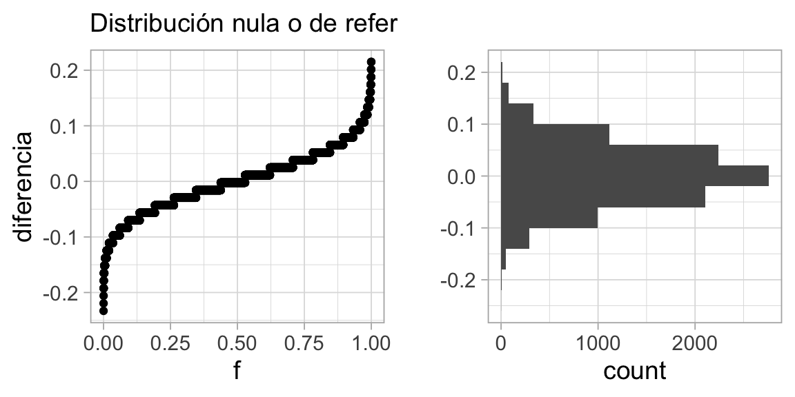
Este es el rango de fluctuación usual para nuestra estadística bajo la hipótesis de que los dos grupos de tomadores de té tienen un mismo proceso generador de datos.
El valor que obtuvimos en nuestros datos es 0.0927602, que no es un valor extremo en la distribución de referencia que vimos arriba: esta muestra no aporta mucha evidencia en contra de que los grupos tienen distribuciones similares.
Podemos graficar otra vez marcando el valor de referencia:
# Función de distribución acumulada (inverso de función de cuantiles)
dist_perm <- ecdf(valores_ref$diferencia)
# Calculamos el percentil del valor observado
percentil_obs <- dist_perm(dif_obs)g_1 <- ggplot(valores_ref, aes(sample = diferencia)) + geom_qq(distribution = stats::qunif) +
xlab("f") + ylab("diferencia") + labs(subtitle = "Distribución nula o de referencia") +
geom_hline(yintercept = dif_obs, colour = "red") +
annotate("text", x = 0.3, y = dif_obs - 0.05, label = "diferencia observada", colour = "red")
g_2 <- ggplot(valores_ref, aes(x = diferencia)) + geom_histogram(binwidth = 0.04) +
coord_flip() + xlab("") + labs(subtitle = " ") +
geom_vline(xintercept = dif_obs, colour = "red") +
annotate("text", x = dif_obs, y = 2000, label = percentil_obs,vjust = -0.2, colour = "red")
gridExtra::grid.arrange(g_1, g_2, ncol = 2) 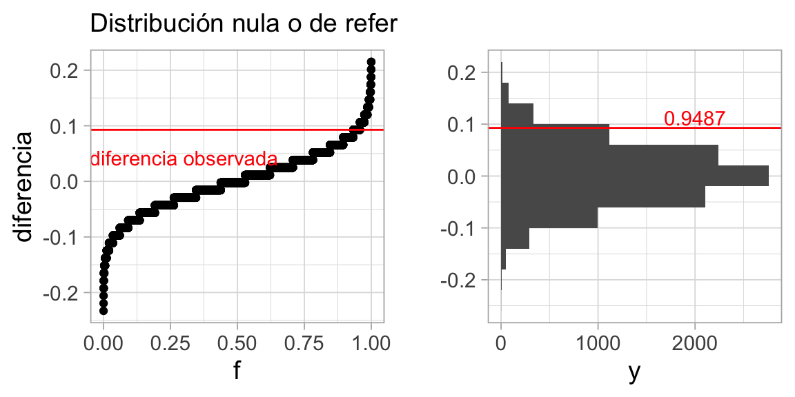
Y vemos que es un valor algo (pero no muy) extremo en la distribución de referencia que vimos arriba: esta muestra no aporta una gran cantidad de evidencia en contra de que los grupos tienen distribuciones similares, que en este caso significa que los dos grupos usan azúcar a tasas similares.
Valor p
Nótese que calculamos una cantidad adicional, que es el percentil donde nuestra observación cae en la distribución generada por las permutación. Esta cantidad puede usarse para calcular un valor p. Podemos calcular, por ejemplo:
- Valor p de dos colas: Si la hipótesis nula es cierta, ¿cuál es la probabilidad de observar una diferencia tan extrema o más extrema de lo que observamos?
Considerando en este caso interpretamos extrema como que cae lejos de donde a mayoría de la distribución se concentra, podemos calcular el valor p como sigue. A partir de el valor observado, consideramos cuál dato es menor: la probabilidad bajo lo hipótesis nula de observar una diferencia mayor de a que observamos, o la probabilidad de observar una diferencia menor a la que observamos. Tomamos el mínimo y multiplicamos por dos (Hesterberg (2015)):
2 * min(dist_perm(dif_obs), (1 - dist_perm(dif_obs)))[1] 0.1026Este valor p se considera como evidencia “moderada” en contra de la hipótesis nula. Valores p más chicos (observaciones más extremas en comparación con la referencia) aportan más evidencia en contra de la hipótesis de que los grupos de tomadores de té , y valores más grandes aportan menos evidencia.
Tomadores de té 2
Ahora hacemos una prueba de permutaciones otro par de proporciones con el mismo método. Ahora comparamos tomadores de té Earl Gray y de té negro según sus tasas de uso de azúcar.
Los datos que obtuvimos en nuestra encuesta, en conteos, son:
| sugar | black | Earl Grey |
|---|---|---|
| No.sugar | 51 | 84 |
| sugar | 23 | 109 |
Y en porcentajes tenemos que:
prop_azucar <- te_azucar |> group_by(Tea, sugar) |> tally() |>
group_by(Tea) |> mutate(prop = 100 * n / sum(n), n = sum(n)) |>
filter(sugar == "sugar") |> select(Tea, prop_azucar = prop, n) |>
mutate('% usa azúcar' = round(prop_azucar)) |> select(-prop_azucar)
prop_azucar |> formatear_tabla()| Tea | n | % usa azúcar |
|---|---|---|
| black | 74 | 31 |
| Earl Grey | 193 | 56 |
Pero distintas muestras podrían haber dado distintos resultados. Nos preguntamos que tan fuerte es la evidencia en contra de que en realidad los dos grupos de personas usan azúcar en proporciones similares, y la diferencia que vemos se puede atribuir a variación muestral.
Escribimos la función que calcula diferencias para cada muestra:
calc_diferencia_2 <- function(datos){
datos |>
mutate(usa_azucar = as.numeric(sugar == "sugar")) |>
group_by(Tea) |>
summarise(prop_azucar = mean(usa_azucar)) |>
spread(Tea, prop_azucar) |>
mutate(diferencia_prop = `Earl Grey` - black) |> pull(diferencia_prop)
}La diferencia observada es:
[1] 0.254Ahora construimos nuestra distribución nula o de referencia:
set.seed(2)
valores_ref <- permutaciones_est(te_azucar, Tea, calc_diferencia_2, n = 10000)Y podemos graficar la distribución de referencia otra vez marcando el valor observado
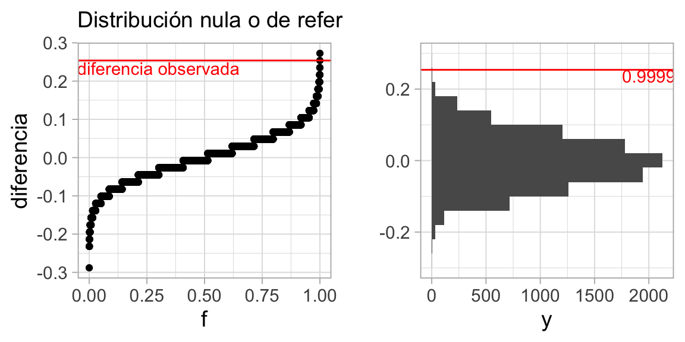
En este caso, la evidencia es muy fuerte en contra de la hipótesis nula, pues el resultado que obtuvimos es muy extremo en relación a la distribución de referencia. El valor p es cercano a 0.
Ejemplo: tiempos de fusión
Consideremos el ejemplo de fusión de estereogramas que vimos anteriormente. Una pregunta que podríamos hacer es: considerando que hay mucha variación en el tiempo de fusión que depende de las personas, necesitamos calificar la evidencia de nuestra conclusión (el tiempo de fusión se reduce con información verbal).
Podemos usar una prueba de permutaciones, esta vez justificándola por el hecho de que los tratamientos se asignan al azar: si los tratamientos son indistinguibles, entonces las etiquetas de los grupos son solo etiquetas, y permutarlas daría muestras igualmente verosímiles.
En este caso, compararemos gráficas de cuantiles de los datos con los producidos por permutaciones:
── Column specification ────────────────────────────────────────────────────────
cols(
n = col_double(),
time = col_double(),
nv.vv = col_character()
)decrypt("pPrt Zh4h Bk VyJB4Byk uu")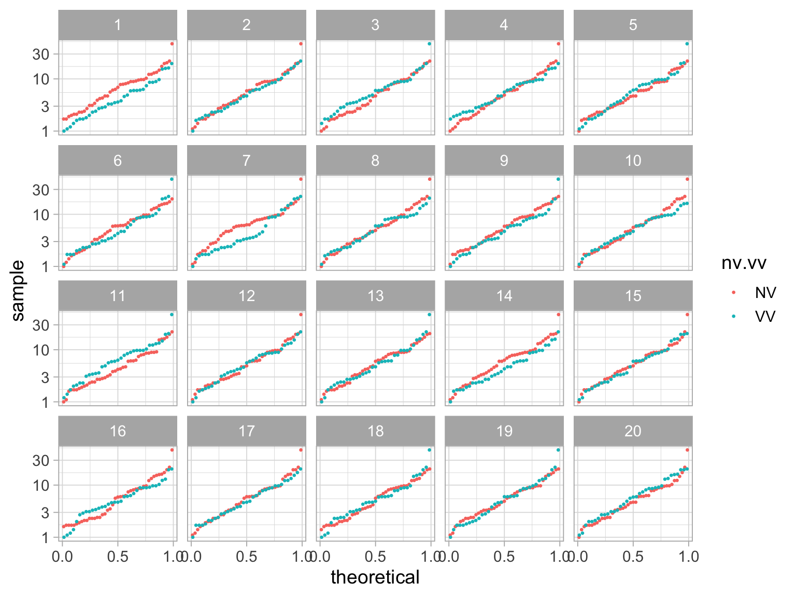
Ejercicio: ¿Podemos identificar los datos? En general, muy frecuentemente las personas identifican los datos correctamente, lo que muestra evidencia considerable de que la instrucción verbal altera los tiempos de respuesta de los partipantes, y en este caso ayuda a reducir el tiempo de fusión de los estereogramas.
En este caso, no usamos una muestra aleatoria de la población, de forma que nuestro resultado no aplica necesariamente para la población general. Sin embargo, es una inferencia válida acerca del tratamiento, pues asignamos al azar el tratamiento
En este caso, tenemos evidencia de que la diferencia se debe al tratamiento y no sólo variación muestral dentro de esta muestra. Si no aleatorizamos el tratamiento (por ejemplo, cada persona escoge si quiere ayuda verbal o no), no podríamos concluir para el efecto del tratamiento.
Ejemplo: tiempos de fusión 2
Podemos usar las pruebas de permutaciones para distintos de tipos de estadísticas: medianas, medias, comparar dispersión usando rangos intercuartiles o varianzas, etc.
Regresamos a los tiempos de fusión. Podemos hacer una prueba de permutaciones para la diferencia de las medias o medianas, por ejemplo. En este ejemplo usaremos una medida de centralidad un poco diferente, como ilustración: el promedio de los cuartiles superior e inferior de las dos distribuciones. Usaremos el cociente de estas dos cantidades para medir su diferencia
stat_fusion <- function(x){
(quantile(x, 0.75) + quantile(x, 0.25))/2
}
calc_fusion <- function(stat_fusion){
fun <- function(datos){
datos |>
group_by(nv.vv) |>
summarise(est = stat_fusion(time)) |>
spread(nv.vv, est) |> mutate(dif = VV / NV ) |> pull(dif)
}
fun
}calc_cociente <- calc_fusion(stat_fusion)
dif_obs <- calc_cociente(fusion)
# permutar
valores_ref <- permutaciones_est(fusion, nv.vv, calc_cociente, n = 10000)
dist_perm_nv <- ecdf(valores_ref$diferencia)
cuantil_obs <- dist_perm_nv(dif_obs)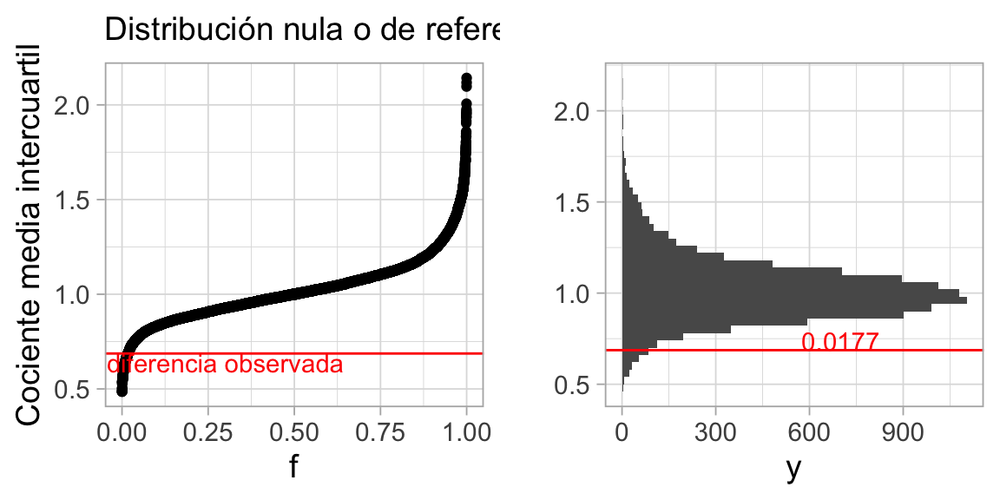
Y el valor p de dos colas es
dist_perm_nv <- ecdf(valores_ref$diferencia)
2 * min(dist_perm_nv(dif_obs), 1- dist_perm_nv(dif_obs))[1] 0.0354Lo que muestra evidencia considerable, aunque no muy fuerte, de que la instrucción verbal ayuda a reducir el tiempo de fusión de los estereogramas: la caja del diagrama de caja y brazos para el grupo VV está encogida por un factor menor a 1.
5.3 Tipos de estudio
El alcance de la inferencia en cada caso es diferente dependiendo del proceso generador de los datos y qué tanto lo controlamos o lo conocemos, como explica esta imagen de Ramsey y Schafer (2002)

El cuadro en la esquina superior izquierda es donde el análisis es más simple y los resultados son más fáciles de interpretar. Es posible hacer análisis fuera de este cuadro, pero el proceso es más complicado, requieren más supuestos, conocimiento del dominio y habilidades de análisis. En general resultan conclusiones menos sólidas. Muchas veces no nos queda otra opción más que trabajar fuera del cuadro ideal.
Como ejercicio ubica en los cuadros los siguientes tipos de estudios:
- Pruebas clínicas para vacuna para aplicar a la población general
- Entre los que tienen prueba positiva, ver la relación entre ser fumador y posibilidad de hospitalización por COVID para dar recomendaciones a la población general.
- Analizar cómo afecta tener seguro médico a los ingresos, usando datos del ENIGH, para entender cómo ayudaría tener seguro médico universal.
- Seleccionar dos muestras al azar de capturistas, y asignarnos al azar a dos tipos de entrenamiento para medir su desempeño en una tarea específica.
Supuestos para pruebas de permutaciones
La pruebas de permutaciones son más útiles cuando nuestra hipótesis nula se refiere que la distribución de los grupos son muy similares, o la independencia entre observaciones y grupo. Esto también aplica cuando queremos probar por ejemplo, que una variable numérica Y es independiente de X.
Hay algunas hipótesis que no se pueden probar con este método, como por ejemplo, las que se refieren a una sola muestra: ¿los datos son consistentes con que su media es igual a 5?
Adicionalmente, en algunas ocasiones queremos probar aspectos más específicos de las diferencias: como ¿son iguales las medias o medianas de dos grupos de datos? ¿Tienen dispersión similar?
Las pruebas de permutaciones no están tan perfectamente adaptadas a este problema, pues prueban todos los aspectos de las distribuciones que se comparan, aún cuando escogamos una estadística particular que pretende medir, por ejemplo, diferencia de medias. Eso quiere decir que podemos rechazar igualdad de medias, por ejemplo, cuando en realidad otra característica de las distribuciones es la que difiere mucho en las poblaciones
En algunas referencias (ver Chihara y Hesterberg (2018), Efron y Tibshirani (1993)) se argumenta que de todas formas las pruebas de permutaciones son relativamente robustas a esta desadaptación. Un caso excepcional, por ejemplo, es cuando las poblaciones que comparamos resultan tener dispersión extremadamente distinta, y adicionalmente los tamaños de muestra de los grupos son muy desiguales (otra vez, ver ejemplos en Chihara y Hesterberg (2018)).
Separación de grupos
Este ejemplo tomado de Chowdhury et al. (2015) (tanto la idea como el código). La pregunta que se aborda en ese estudio es:
- Existen métodos de clasificación (supervisados o no supervisados) para formar grupos en términos de variables que describen a los individuos
- Estos métodos (análisis discriminante, o k-means, por ejemplo), pretenden formar grupos compactos, bien separados entre ellos. Cuando aplicamos el método, obtenemos clasificadores basados en las variables de entrada.
- La pregunta es: ¿los grupos resultantes son producto de patrones que se generalizan a la población, o capitalizaron en variación aleatoria para formarse?
- Especialmente cuando tenemos muchas mediciones de los individuos, y una muestra relativamente chica, Es relativamente fácil encontrar combinaciones de variables que separan los grupos, aunque estas combinaciones y diferencias están basadas en ruido y no generalizan a la población.
Como muestran en Chowdhury et al. (2015), el lineup es útil para juzgar si tenemos evidencia en contra de que los grupos en realidad son iguales, y usamos variación muestral para separarlos.
Avispas (opcional)
En el siguiente ejemplo, tenemos 4 grupos de avispas (50 individuos en total), y para cada individuo se miden expresiones de 42 genes distintos. La pregunta es: ¿Podemos separar a los grupos de avispas dependiendo de sus mediciones?
En este se usó análisis discriminante para buscar proyecciones de los datos en dimensión baja de forma que los grupos sean lo más compactos y separados posibles.
Para probar qué tan bien funciona este método, podemos hacer una prueba de permutación, aplicamos LDA y observamos los resultados.
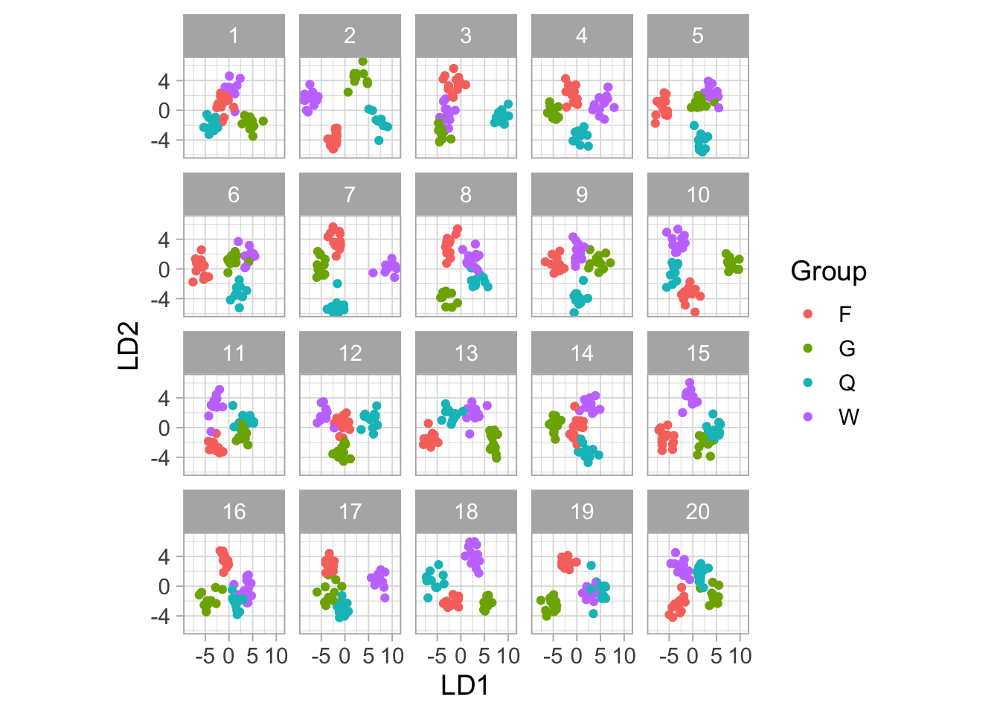
Y vemos que incluso permutando los grupos, es generalmente posible separarlos en grupos bien definidos: la búsqueda es suficientemente agresiva para encontrar combinaciones lineales que los separan. Que no podamos distinguir los datos verdaderos de las replicaciones nulas indica que este método difícilmente puede servir para separar los grupos claramente.
Otro enfoque sería separar los datos en una muestra de entrenamiento y una de prueba (que discutiremos en la última sesión). Aplicamos el procedimiento a la muestra de entrenamiento y luego vemos qué pasa con los datos de prueba:
set.seed(8)
wasps_1 <- wasps |> mutate(u = runif(nrow(wasps), 0, 1))
wasps_entrena <- wasps_1 |> filter(u <= 0.8)
wasps_prueba <- wasps_1 |> filter(u > 0.8)
wasp.lda <- MASS::lda(Group ~ ., data=wasps_entrena[,-1])
wasp_ld_entrena <- predict(wasp.lda, dimen=2)$x |>
as_tibble(.name_repair = "universal") |>
mutate(tipo = "entrenamiento") |>
mutate(grupo = wasps_entrena$Group)
wasp_ld_prueba <- predict(wasp.lda, newdata = wasps_prueba, dimen=2)$x |>
as_tibble(.name_repair = "universal") |>
mutate(tipo = "prueba")|>
mutate(grupo = wasps_prueba$Group)
wasp_lda <- bind_rows(wasp_ld_entrena, wasp_ld_prueba)
ggplot(wasp_lda, aes(x = LD1, y = LD2, colour = grupo)) + geom_point(size = 3) +
facet_wrap(~tipo) + scale_color_colorblind()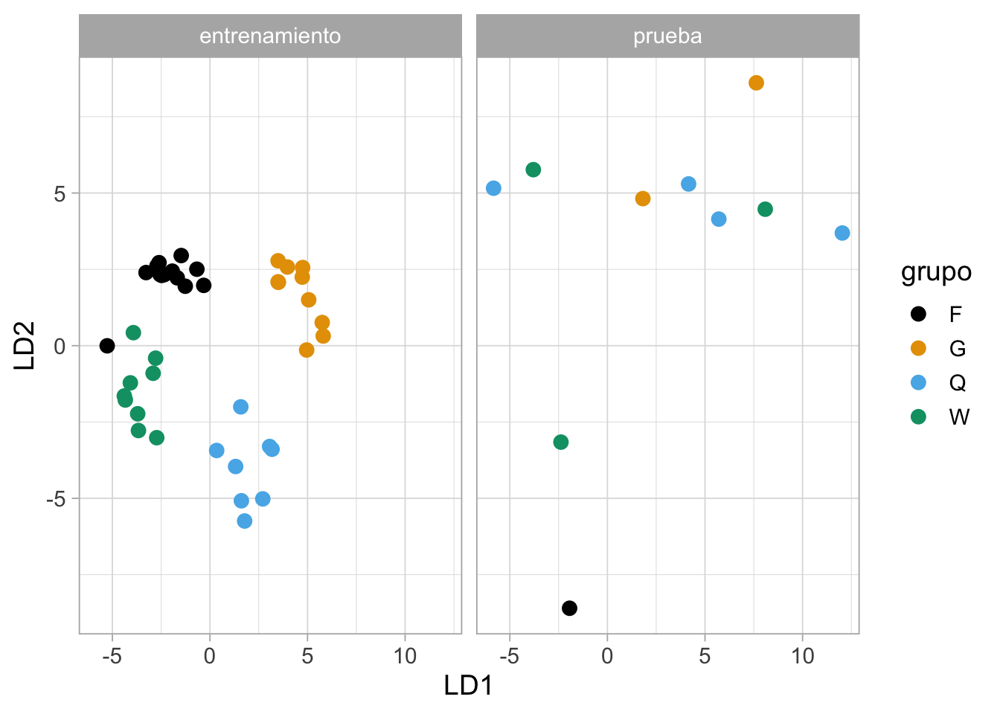
Aunque esta separación de datos es menos efectiva en este ejemplo por la muestra chica, podemos ver que la separación lograda en los datos de entrenamiento probablemente se debe a variación muestral.
La “crisis de replicabilidad”
Recientemente (Ioannidis (2005)) se ha reconocido en campos como la sicología la crisis de replicabilidad. Varios estudios que recibieron mucha publicidad inicialmente no han podido ser replicados posteriormente por otros investigadores. Por ejemplo:
- Hacer poses poderosas produce cambios fisiológicos que mejoran nuestro desempeño en ciertas tareas
- Mostrar palabras relacionadas con “viejo” hacen que las personas caminen más lento (efectos de priming)
En todos estos casos, el argumento de la evidencia de estos efectos fue respaldada por una prueba de hipótesis nula con un valor p menor a 0.05. La razón es que ese es el estándar de publicación seguido por varias áreas y revistas. La tasa de no replicabilidad parece ser mucho más alta (al menos la mitad o más según algunas fuentes, como la señalada arriba) que lo sugeriría la tasa de falsos positivos (menos de 5%)
Este problema de replicabilidad parece ser más frecuente cuando:
- Se trata de estudios de potencia baja: mediciones ruidosas y tamaños de muestra chicos.
- El plan de análisis no está claramente definido desde un principio (lo cual es difícil cuando se están investigando “fenómenos no estudiados antes”)
¿A qué se atribuye esta crisis de replicabilidad?
El jardín de los senderos que se bifurcan
Aunque haya algunos ejemplos de manipulaciones conscientes –e incluso, en menos casos, malintencionadas– para obtener resultados publicables o significativos (p-hacking), como vimos en ejemplos anteriores, hay varias decisiones, todas razonables, que podemos tomar cuando estamos buscando las comparaciones correctas. Algunas pueden ser:
- Transformar los datos (tomar o no logaritmos, u otra transformación)
- Editar datos atípicos (razonable si los equipos pueden fallar, o hay errores de captura, por ejemplo)
- Distintas maneras de interpretar los criterios de inclusión de un estudio (por ejemplo, algunos participantes mostraron tener gripa, o revelaron que durmieron muy poco la noche anterior, etc. ¿los dejamos o los quitamos?)
Dado un conjunto de datos, las justificaciones de las decisiones que se toman en cada paso son razonables, pero con datos distintos las decisiones podrían ser diferentes. Este es el jardín de los senderos que se bifurcan Gelman, que invalida en parte el uso valores p como criterio de evidencia contra la hipótesis nula.
Esto es exacerbado por:
- Tamaños de muestra chicos y efectos “inestables” que se quieren medir (por ejemplo en sicología)
- El hecho de que el criterio de publicación es obtener un valor p < 0.05, y la presión fuerte sobre los investigadores para producir resultados publicables (p < 0.05)
- El que estudios o resultados similares que no obtuvieron valores \(p\) por debajo del umbral no son publicados o reportados.
Ver por ejemplo el comunicado de la ASA.
Ojo: esas presiones de publicación no sólo ocurre para investigadores en sicología. Cuando trabajamos en problemas de análisis de datos en problemas que son de importancia, es común que existan intereses de algunas partes o personas involucradas por algunos resultados u otros (por ejemplo, nuestros clientes de consultoría o clientes internos). Eso puede dañar nuestro trabajo como analistas, y el avance de nuestro equipo. Aunque esas presiones son inevitables, se vuelven manejables cuando hay una relación de confianza entre las partes involucradas.
Ejemplo: decisiones de análisis y valores p
En el ejemplo de datos de fusión, decidimos probar, por ejemplo, el promedio de los cuartiles inferior y superior, lo cual no es una decisión típica pero usamos como ilustración. Ahora intentamos usar distintas mediciones de la diferencia entre los grupos, usando distintas medidas resumen y transformaciones (por ejemplo, con o sin logaritmo). Aquí hay unas 12 combinaciones distintas para hacer el análisis (multiplicadas por criterios de “aceptación de datos en la muestra”, que simulamos tomando una submuestra al azar):
calc_fusion <- function(stat_fusion, trans, comparacion){
fun <- function(datos){
datos |>
group_by(nv.vv) |>
summarise(est = stat_fusion({{ trans }}(time))) |>
spread(nv.vv, est) |> mutate(dif = {{ comparacion }}) |> pull(dif)
}
fun
}
valor_p <- function(datos, variable, calc_diferencia, n = 1000){
# calcular estadística para cada grupo
permutar <- function(variable){
sample(variable, length(variable))
}
tbl_perms <- tibble(.sample = seq(1, n-1, 1)) |>
mutate(diferencia = map_dbl(.sample,
~ datos |> mutate({{variable}} := permutar({{variable}})) |> calc_diferencia()))
perms <- bind_rows(tbl_perms, tibble(.sample = n, diferencia = calc_diferencia(datos)))
perms_ecdf <- ecdf(perms$diferencia)
dif <- calc_diferencia(datos)
2 * min(perms_ecdf(dif), 1- perms_ecdf(dif))
}set.seed(7272)
media_cuartiles <- function(x){
(quantile(x, 0.75) + quantile(x, 0.25))/2
}
# nota: usar n=10000 o más, esto solo es para demostración:
calc_dif <- calc_fusion(mean, identity, VV - NV)
valor_p(fusion |> sample_frac(0.95), nv.vv, calc_dif, n = 1000)[1] 0.072calc_dif <- calc_fusion(mean, log, VV - NV)
valor_p(fusion |> sample_frac(0.95), nv.vv, calc_dif, n = 1000)[1] 0.024calc_dif <- calc_fusion(median, identity, VV / NV)
valor_p(fusion |> sample_frac(0.95), nv.vv, calc_dif, n = 1000)[1] 0.016calc_dif <- calc_fusion(media_cuartiles, identity, VV / NV)
valor_p(fusion |> sample_frac(0.95), nv.vv, calc_dif, n = 1000)[1] 0.026Si existen grados de libertad - muchas veces necesarios para hacer un análisis exitoso-, entonces los valores p pueden tener poco significado.
Alternativas o soluciones
El primer punto importante es reconocer que la mayor parte de nuestro trabajo es exploratorio (recordemos el proceso complicado del análisis de datos de refinamiento de preguntas). En este tipo de trabajo, reportar valores p puede tener poco sentido, y mucho menos tiene sentido aceptar algo “verdadero” cuando pasa un umbral de significancia dado.
Nuestro interés principal al hacer análisis es expresar correctamente y de manera útil la incertidumbre asociada a las conclusiones o patrones que mostramos (asociada a variación muestral, por ejemplo) para que el proceso de toma de decisiones sea informado. Un resumen de un número (valor p, o el que sea) no puede ser tomado como criterio para tomar una decisión que generalmente es compleja. En la siguiente sección veremos cómo podemos mostrar parte de esa incertidumbre de manera más útil.
Por otra parte, los estudios confirmatorios (donde se reportan valores p) también tienen un lugar. En áreas como la sicología, existen ahora movimientos fuertes en favor de la repetición de estudios prometedores pero donde hay sospecha de grados de libertad del investigador. Este movimiento sugiere dar valor a los estudios exploratorios que no reportan valor p, y posteriormente, si el estudio es de interés, puede intentarse una replicación confirmatoria, con potencia más alta y con planes de análisis predefinidos.